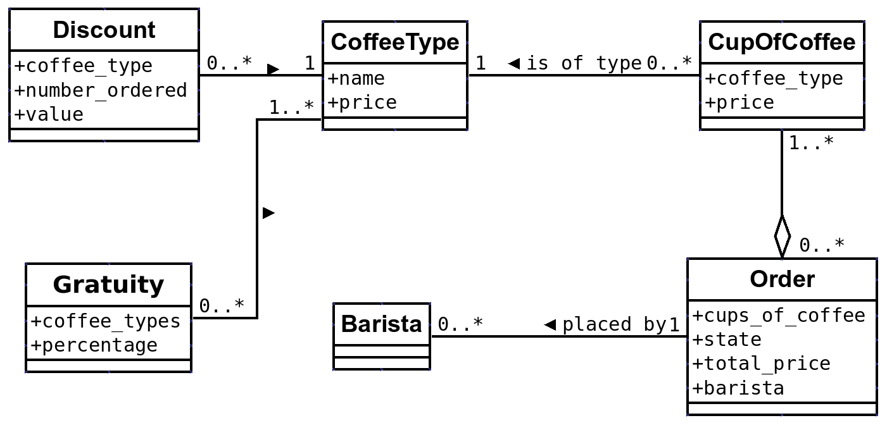
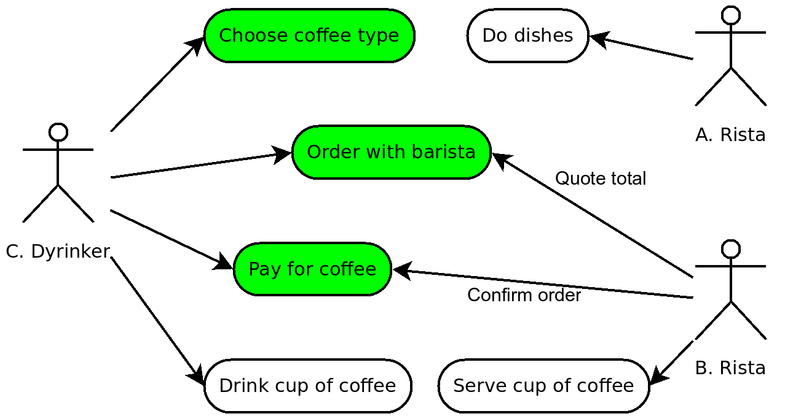

Designing a REST API
A process oriented approach
Show of hands
- Who used a REST API?
- Who knows what REST stands for?
- Who recently built an internal RESTful API?
- Who recently built a public-facing RESTful API?
Table of contents
- Why REST?
- Process vs data oriented API design
- Media types in API's
- Evolving a process-oriented API
Why REST?
- Loose coupling of client and server
- Scalable
- Use existing web infrastructure
- The web seems to work well enough!
Process vs data oriented API design
But isn't REST just exposing my DB tables as resources?
How to design your API
Step 1 - Design your process
Step 2 - Design your process!
Step 3 - Design your process!!
Data oriented design
How?
Simple!
- Expose DB tables / ORM models als resources
- Use HTTP verbs for CRUD
Example case
The data

Resources
/coffeetypes GET
/cupsofcoffee GET, POST
/baristas GET
/orders GET, POST
Flow
GET /coffeetypes
GET /baristas
POST /cupsofcoffee
<- /cupsofcoffee/xyz
POST /orders { cupsofcoffee: xyz, barista: ... }
Really the right approach?

Really?
Advantages
- Easy to build
- Flexible clients
Disadvantages
- Hard to build clients
- Logic in clients (DRY?)
- Easy to run into inefficient interactions
- Tight coupling between API design and DB design
When data-oriented design?
- Internal API's
- Flexibility of clients is essential
- You're
lazypressed for time
Process oriented design
Principles
- Design API for a purpose
- Limit flexibility for ease of use and efficiency
- Focus on relations (and process), not on resources (and data)
How?
Model your process seen from the end-user
State diagram, flow chart, use case, BPMN, words, whatever
Coffee process

Determine which steps your API supports
Depends on what you're building
For every step: "Invent" resource
Base design decisions on what the API user wants to achieve
- Available verbs come from HTTP
- Resource has to be a noun
- Avoid /orders/create or /barista/order
Coffee resources
/coffeetypes GET
/baristas GET
/quote GET
/orders (or /payments GET, POST
For every resource: Determine relations
This is essential
- The API should "flow" (discoverable)
- Use link relations, never rely on URL hardcoding
- Use standard link relations where possible (IANA.org)
- Properly document your own relations
Example relations

Now consider which data is involved for every resource
Don't be afraid to manipulate multiple (or no!) DB tables for one resource
Advantages
- Logic on server
- Building clients is easy
- Interactions are efficient (as designed)
- No coupling between DB models and API interaction
Disadvantages
- Less flexible (but can be built into design)
- Initial design is difficult
Media types in API's
Can't we just use HTML in the API?
Why consider API media types?
- Docs and tooling already written
- Handling of link relations, collections, etc already defined
- Why reinvent the wheel?
Some media types
HAL
- Minimalistic
- Process-oriented
- Embrace HTTP standards
- First of its kind
{
"_links": {
"self": { "href": "/orders" },
"next": { "href": "/orders?page=2" }
},
"currentlyProcessing": 14,
"shippedToday": 20,
"_embedded": {
"order": [{
"_links": {
"self": { "href": "/orders/123" },
"basket": { "href": "/baskets/98712" },
"customer": { "href": "/customers/7809" }
},
"total": 30.00,
"currency": "USD",
"status": "shipped"
}]
}
}
Check out https://github.com/paylogic/halogen
JSON API
- From Ruby world
- CRUD oriented
- All included
{
"links": {
"self": "http://example.com/posts",
"next": "http://example.com/posts?page[offset]=2",
},
"data": [{
"type": "posts",
"id": "1",
"attributes": {
"title": "JSON API paints my bikeshed!"
},
"links": {
"self": "http://example.com/posts/1",
"author": {
"self": "http://example.com/posts/1/links/author",
"related": "http://example.com/posts/1/author",
"linkage": { "type": "people", "id": "9" }
}
}
}],
"included": [{
"type": "people",
"id": "9",
"attributes": {
"first-name": "Dan",
"last-name": "Gebhardt",
"twitter": "dgeb"
},
"links": {
"self": "http://example.com/people/9"
}
}]
}
Mason
- Like HAL, but with actiions
{
"ID": 1,
"Title": "Program crashes when pressing ctrl-p",
"Severity": 5,
"@links": {
"self": {
"href": "http://issue-tracker.org/issues/1"
},
"up": {
"href": "http://issue-tracker.org/projects/1",
"title": "Containing project"
},
}
"@actions": {
"project-create": {
"type": "json",
"href": "http://issue-tracker.org/mason-demo/projects",
"title": "Create new project",
"schemaUrl": "http://issue-tracker.org/mason-demo/schemas/create-project"
}
}
JSON Patch
http://jsonpatch.com/
The original document
{
"baz": "qux",
"foo": "bar"
}
The patch
[
{ "op": "replace", "path": "/baz", "value": "boo" },
{ "op": "add", "path": "/hello", "value": ["world"] },
{ "op": "remove", "path": "/foo"}
]
The result
{
"baz": "boo",
"hello": ["world"]
}
vnd.error
https://github.com/blongden/vnd.error
{
"logref": "42",
"message": "A payment method is needed for the creation of an order. Please retrieve a bill for the selected products to see which payment methods are available.",
"type": "BAD_REQUEST",
"_links": {
"help": {
"href": "http://shopping-api-docs.sandbox.paylogic.com/orders",
"type": "text/html"
}
}
}
Evolving your process-oriented REST API
First fit it in the process
If it doesn't fit, don't build it (or build another API)
Leave your options open
- What are my options?
- Which changes are coming up?
- For each choice: Does it close off other interesting paths / extensions / alternatives?
Push for clients using link relations
And build in a mechanism for deprecation
Best practices
Always show all keys
With sensible empty default
That's it!
Questions?
Reading material
- REST in Practice - Jim Webber et al
- RESTful Web Services Cookbook - Subbu Allamaraju
- Google groups: api-craft, hal-discuss